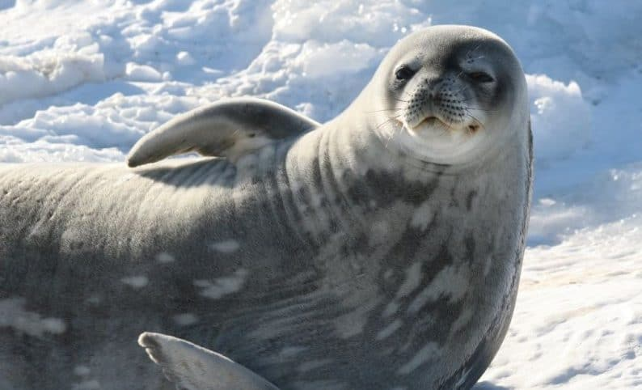
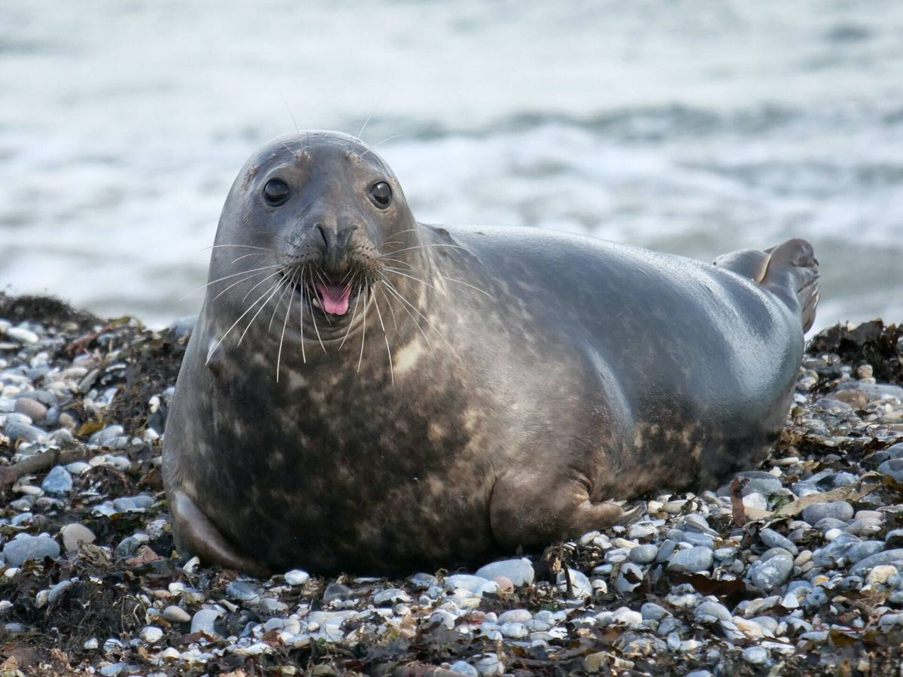

La foca común, foca de puerto o foca moteada (Phoca vitulina) es una especie de mamífero pinnípedo de la familia de los fócidos que habita a lo largo de las líneas costeras de los mares templados y fríos del hemisferio norte. Se la puede hallar en las aguas costeras del norte del Atlántico y del Pacífico, así como también en el mar Báltico y en el mar del Norte, lo que la convierte en la especie más ampliamente distribuida del orden de los pinnípedos, el cual incluye a la morsa, los otarios y las focas verdaderas.
Las focas moteadas
son de color marrón, canela o gris, con orificios nasales distintivamente curvados en forma de V. Un adulto puede obtener una altura de 1.85 metros y un peso de 130 kilos. Las hembras viven más que los machos (30-35 años frente a 20-25 años). Las focas moteadas se apegan a sus familias descansando en zonas que les son familiares, generalmente áreas rocosas donde no pueden ser alcanzadas por depredadores, y en las que tienen un suministro seguro de peces para comer. Los machos luchan bajo el agua para poder aparearse con una hembra. Estas se aparean con los machos más fuertes y luego dan a luz a crías, que sólo son cuidadas por las hembras. Las crías son capaces de nadar y zambullirse a pocas horas de haber nacido, y crecen rápidamente con la leche materna.
Estos pinnípedos poseen sistemas muy desarrollados de mecanorrecepción, por lo que pueden detectar y discriminar objetos por contacto directo con los mismos, así como analizar movimientos de agua, lo que resulta fundamental para su orientación.
Cada individuo posee un patrón único de manchas oscuras (o manchas claras en un fondo oscuro) que varían en color de negro parduzco a canela o gris; su vientre es generalmente claro. El cuerpo y las aletas son cortas, con una cabeza redondeada y grande en proporción. Los orificios aparecen distintivamente con curvas en forma de V; mientras que otros fócidos, no tienen orejas, o pabellón auricular. Un canal auricular relativamente grande (para una foca) puede ser visible detrás del ojo. Incluyendo la cabeza y las aletas, pueden llegar a alcanzar una longitud adulta de 1.85 metros y un peso de 130 kilogramos. Las hembras son generalmente más pequeñas que los machos.